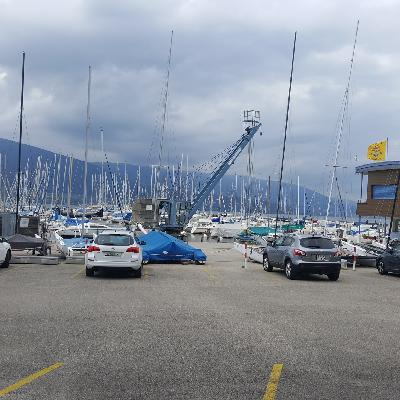
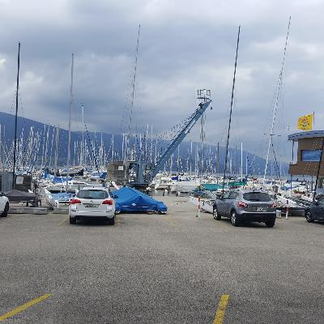
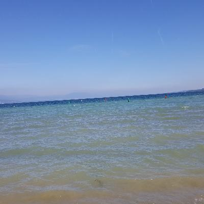
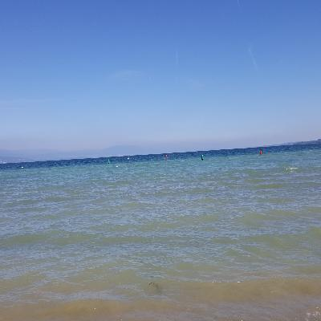
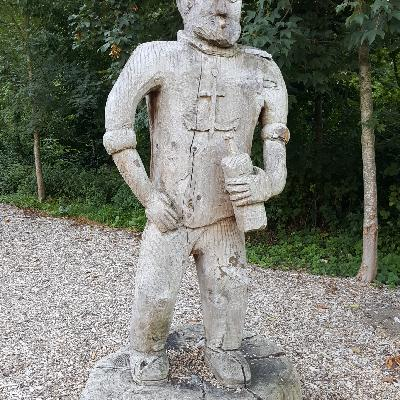
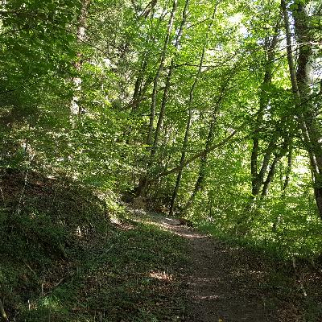
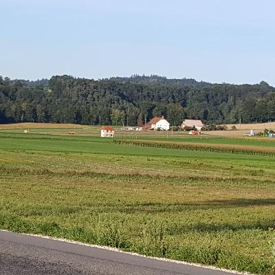
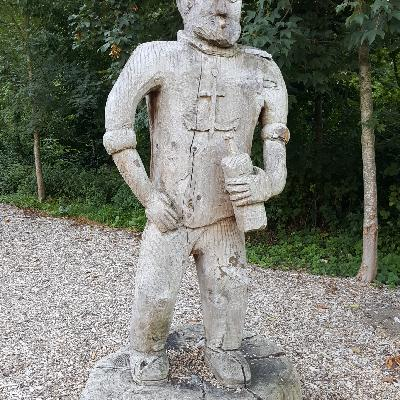
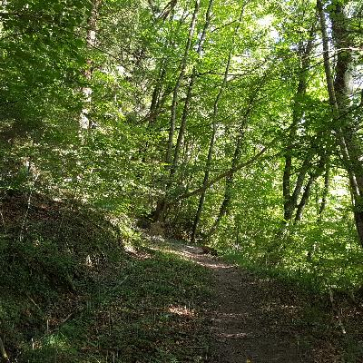
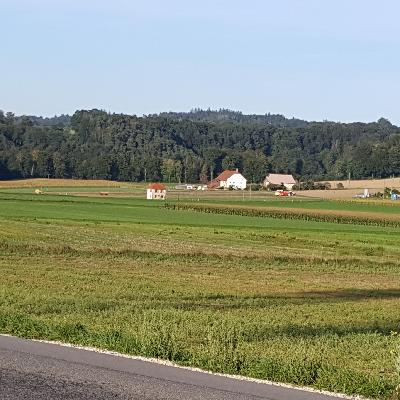

Since I got to Geneva a week and a half earlier than I needed to, I was more or less forced to go on a bicycle tour of Switzerland. Don't you hate when that happens?
Next up, Switzerland!
I spent a few days in Geneva catching up with my friend, Samah. She's going to inherit my bicycle in a week, too! I didn't take pictures in Geneva, really.
I was thinking of going around Lake Léman (the lake that Geneva is on), but I decided instead to go north to Basel, which is on the border of Switzerland, France and Germany. First I went to Lausanne, and now I'm in a place called Yvonand. Next up is Biel/Bienne (a bilingual city), a little place in a nature reserve called Hodderbank, and then St. Louis, which is the French suburb of Basel. The trip from Basel back to Geneva is like two and a half hours, and $70; it'll be kind of fun watching days worth of cycling whoosh by! The little pins show my route - Geneva is on the bottom right, and it goes up to Basel.
Geneva to Yvonand
I didn't take pictures on the trip from Geneva to Lausanne. Frankly, it wasn't all that scenic, and it was threatening rain the whole way. I also took a detour into France along the foot of the Jura mountain chain, and it was hillier than I thought it would be, so it turned into a bit of a long day. Also, I only spent the one night in Lausanne – it's kind of a big city, and I wanted to get fully back into the bicycle thing.
From Lausanne to Yvonand, it was pretty hilly for the first 15 km or so. That took half the time, and the remaining 35 km or soo took the other half. Here are some pictures of that trip:
 

Walking around Yvonand
I'm staying two nights in Yvonand, so I had a day to catch up on podcasts, and go for a walk…

 

 






Next up, Biel/Bienne! I'll be staying in a private room in a hostel called “lagolodge,” which could be interesting.